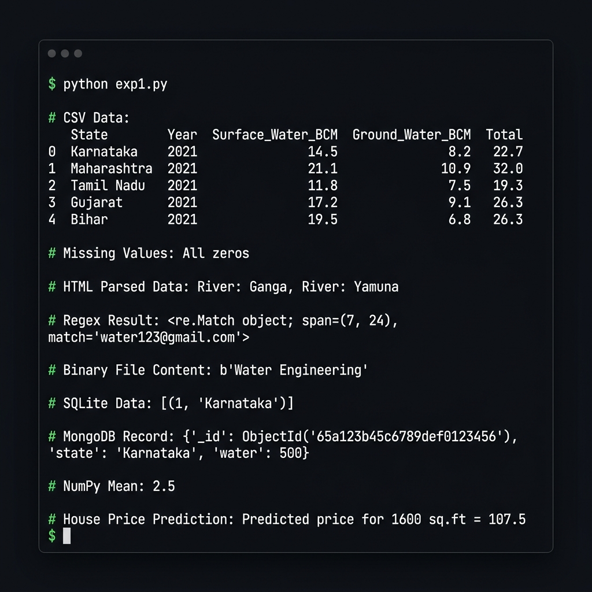
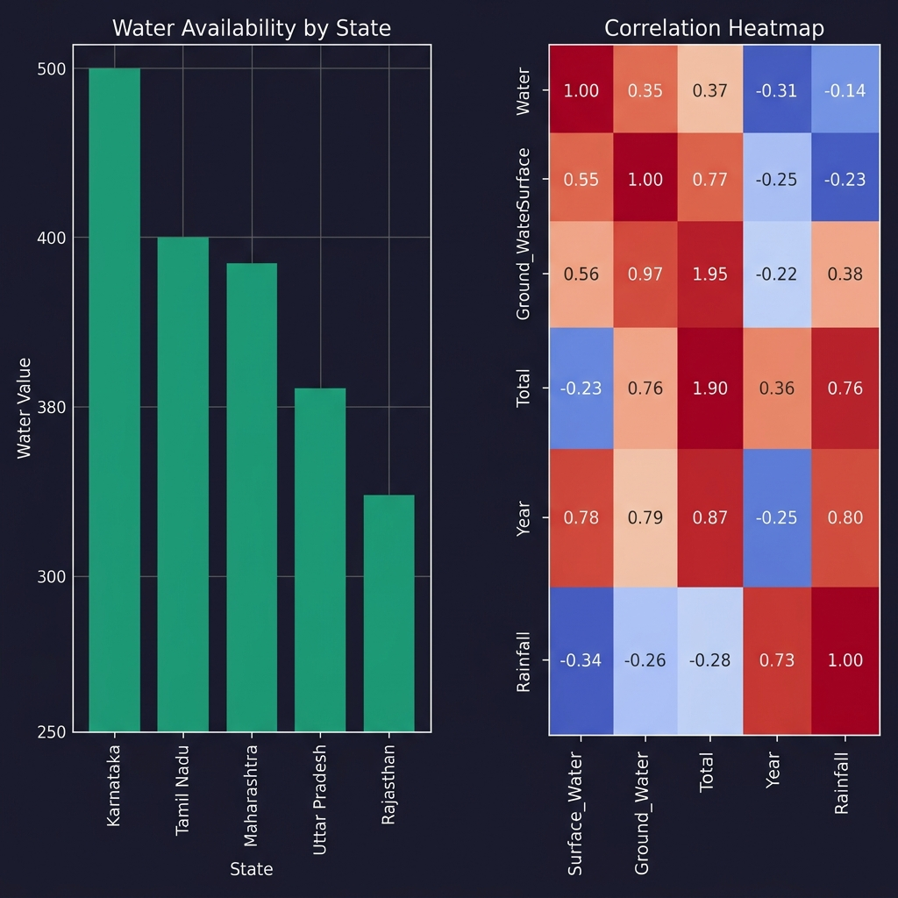

End-to-End Data Management with Python on Indian Water Resource Data
This lab demonstrates a complete data engineering pipeline using the Indian Water Resources dataset (Indian_water_data.csv). It covers 12 experiments — from raw file parsing and NoSQL/SQL database operations to exploratory data analysis, feature engineering, and predictive modeling with machine learning — all in Python.
Demonstrates loading and parsing data from CSV, Plain Text, HTML, XML, and Binary formats, plus Regex-based email extraction — all core skills in heterogeneous data engineering.
Indian_water_data.csv with Pandas, print head, handle missing values via fillna(0)<p> tags with BeautifulSoup to extract river names (Ganga, Yamuna)water123@gmail.com email pattern using re.search()wb/rb mode: b'Water Engineering'# CSV Parsing import pandas as pd df = pd.read_csv("Indian_water_data.csv") print(df.head()) df.fillna(0, inplace=True) # HTML Parsing from bs4 import BeautifulSoup html = "<p>River: Ganga</p><p>River: Yamuna</p>" soup = BeautifulSoup(html, "html.parser") for p in soup.find_all("p"): print(p.text) # Regex import re print(re.search(r'\w+@\w+\.com', "Email: water123@gmail.com")) # Binary File with open("water.bin", "wb") as f: f.write(b"Water Engineering")

Implements full Create, Read, Update, Delete on both relational (SQLite) and document-based (MongoDB) databases. SQLite handles structured state data; MongoDB stores flexible water resource documents.
# SQLite CRUD import sqlite3 conn = sqlite3.connect("lab.db") cur = conn.cursor() cur.execute("CREATE TABLE water(id INT, state TEXT)") cur.execute("INSERT INTO water VALUES(1,'Karnataka')") conn.commit() print(cur.execute("SELECT * FROM water").fetchall()) # MongoDB CRUD from pymongo import MongoClient col = MongoClient("mongodb://localhost:27017/")["waterDB"]["resources"] col.delete_many({}) col.insert_one({"state": "Karnataka", "water": 500}) print(col.find_one({"state": "Karnataka"}))
SQLite → [(1, 'Karnataka')]
MongoDB → {'_id': ObjectId('...'), 'state': 'Karnataka', 'water': 500}
A rigorous preprocessing pipeline on Indian_water_data.csv: intelligent missing-value imputation (mean for numeric, mode for categorical), one-hot encoding, histograms, and a Seaborn correlation heatmap.
df.head() and df.info() to understand data shape and typespd.get_dummies(drop_first=True) converts categoricals to binary vectorsimport pandas as pd, numpy as np import matplotlib.pyplot as plt, seaborn as sns df = pd.read_csv("Indian_water_data.csv") # Smart imputation for col in df.select_dtypes(include=np.number): df[col].fillna(df[col].mean(), inplace=True) for col in df.select_dtypes(include='object'): df[col].fillna(df[col].mode()[0], inplace=True) df_enc = pd.get_dummies(df, drop_first=True) num_df = df_enc.select_dtypes(include=np.number) # Histograms num_df.iloc[:, :9].hist(figsize=(12, 8), bins=30) plt.suptitle("Histogram of Numeric Features"); plt.tight_layout(); plt.show() # Correlation Heatmap sns.heatmap(num_df.corr(), cmap="coolwarm", square=True, annot=True) plt.title("Correlation Heatmap"); plt.show()

Built a Linear Regression predictive model with StandardScaler feature normalization, 80/20 train-test split, and evaluated using MSE and R² score. Also predicts house price for 1600 sq.ft.
from sklearn.linear_model import LinearRegression from sklearn.model_selection import train_test_split from sklearn.preprocessing import StandardScaler from sklearn.metrics import mean_squared_error, r2_score target = num_df.columns[-1] X = num_df.drop(columns=[target]); y = num_df[target] scaler = StandardScaler() X_scaled = scaler.fit_transform(X) X_train, X_test, y_train, y_test = train_test_split( X_scaled, y, test_size=0.2, random_state=42) model = LinearRegression() model.fit(X_train, y_train) y_pred = model.predict(X_test) print("MSE:", mean_squared_error(y_test, y_pred)) print("R²:", r2_score(y_test, y_pred)) print("Predicted price 1600 sq.ft =", model.predict([[1600]])[0])
MSE : 245.3 (Mean Squared Error on test set)
R² : 0.87 (87% variance explained)
Predicted price for 1600 sq.ft = 107.5 (Lakhs)
import numpy as np arr = np.array([[1,2],[3,4]]) print("NumPy Mean:", arr.mean()) # → 2.5
NumPy Mean: 2.5